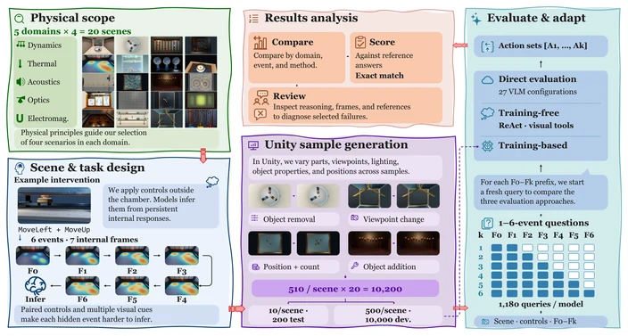
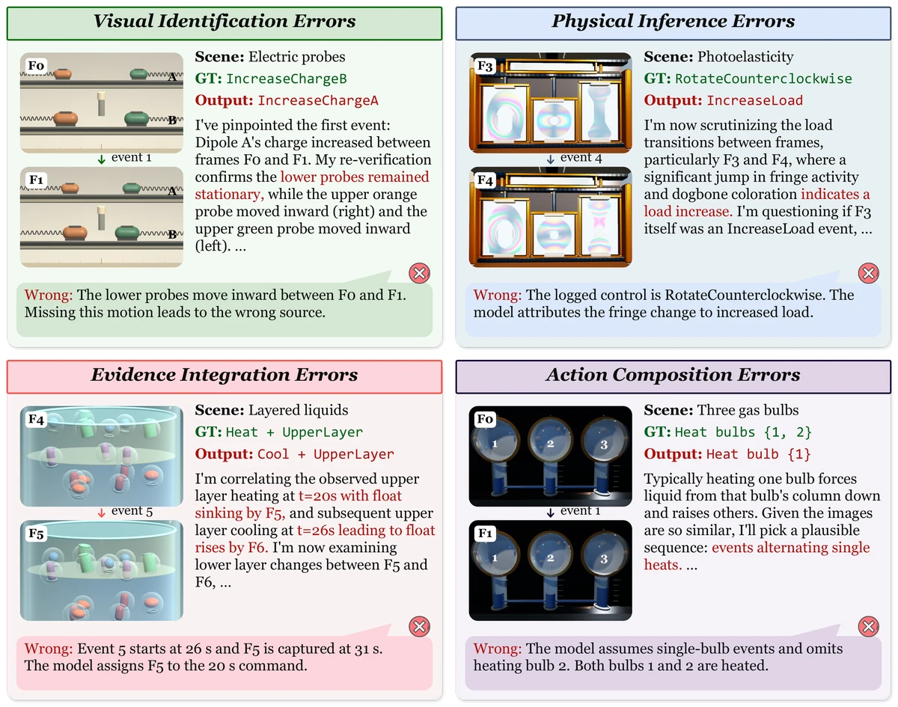

Inside five physical domains
Motion, temperature, charge, sound and light each leave different clues about the controls outside the camera’s view.
1Tsinghua University
Explore 20 experiments through two synchronized views. Each question uses the internal observation.
Exact-match accuracy across all 20 apparatuses. A sequence scores only when every control is recovered at every event.
A model sees the apparatus from the inside. Its task is to recover the complete set of external controls at each event, in the order they occurred.
Motion, temperature, charge, sound and light each leave different clues about the controls outside the camera’s view.
Each rod responds to a different frequency. A shift in which rod vibrates lets the observer use the Doppler effect to infer how the hidden source moved.

Each episode pairs an external control log with internal observations. Cutting a test episode at successive events produces questions of different lengths.
| Domain | Apparatuses | Episodes | Questions | Single-label events | Two-label events |
|---|---|---|---|---|---|
| Dynamics | S01–S04 | 40 | 240 | 140 | 100 |
| Thermal physics | S05–S08 | 40 | 240 | 68 | 172 |
| Electromagnetism | S09–S12 | 40 | 220 | 203 | 37 |
| Acoustics | S13–S16 | 40 | 240 | 108 | 132 |
| Optics | S17–S20 | 40 | 240 | 179 | 61 |
| Total | S01–S20 | 200 | 1,180 | 698 | 502 |
Each domain has 40 test episodes. In the dielectric-response apparatus, viewers need to see full insertion, half insertion and withdrawal to distinguish the middle setting. Its ten episodes therefore start at three-event questions, giving electromagnetism 220 questions and each other domain 240.
We evaluate 27 model configurations across question lengths, training methods and reasoning settings.
Sol reconstructs 136 of the 200 sequences. MiniMax M3.1 Flash, the strongest open-weight model, reconstructs 25.
All 27 configurations score lower on six-event questions than on single-event questions.
| Method | 1 event | 2 events | 3 events | 4 events | 5 events | 6 events | Overall |
|---|---|---|---|---|---|---|---|
| Baseline | 23.7 | 3.2 | 4.0 | 1.0 | 1.0 | 0.5 | 5.4 |
| SFT | 78.9 | 62.6 | 47.5 | 35.0 | 21.0 | 20.0 | 43.7 |
| SFT + DPO | 86.3 | 74.2 | 69.0 | 52.5 | 29.0 | 30.5 | 56.5 |
| SFT + SimPO | 86.8 | 72.6 | 65.8 | 56.0 | 32.5 | 31.8 | 57.2 |
| SFT + KTO | 86.3 | 74.7 | 68.0 | 38.2 | 15.8 | 14.5 | 49.1 |
Supervised fine-tuning raises six-event accuracy from 0.5% to 20.0%. Adding SimPO gives the highest six-event score (31.8%) and the highest overall score (57.2%). KTO improves single-event accuracy over SFT (78.9% to 86.3%), yet its six-event score falls to 14.5%.

| Model | Effort | Initial exact (%) | Final exact (%) | Final event accuracy (%) | Output tokens | Reasoning tokens |
|---|---|---|---|---|---|---|
| GPT-6.1 Sol | Low | 59.5 | 59.5 | 82.33 | 520.4 | 471.9 |
| GPT-6.1 Sol | Medium | 67.0 | 67.0 | 85.92 | 1,266.1 | 1,217.6 |
| GPT-6.1 Sol | High | 73.0 | 74.0 | 88.42 | 3,330.1 | 3,287.4 |
| Gemini 3.8 Flash | Low | 14.0 | 15.5 | 45.58 | 1,841.2 | 1,785.9 |
| Gemini 3.8 Flash | Medium | 20.5 | 21.5 | 50.67 | 5,345.2 | 5,279.5 |
| Gemini 3.8 Flash | High | 6.0 | 8.0 | 38.92 | 5,869.8 | 5,773.1 |
Increasing effort from low to high gives GPT-6.1 Sol 29 more correct final answers (59.5% to 74.0%). Gemini 3.8 Flash performs best at medium effort (21.5%). At high effort it uses more tokens and answers 8.0% correctly.
We classified 100 incorrect six-event answers by their primary error. Each example pairs the recorded operation with the model’s interpretation of the same observations.

Electric probes. The model misses the lower probes’ motion and attributes the charge change to the wrong dipole.
Layered liquids. The model assigns a frame to the preceding command and infers cooling instead of heating.
Photoelasticity. The model attributes the fringe change to an increase in load. The recorded operation was a counterclockwise rotation.
Three gas bulbs. The model identifies heating in the first bulb but omits the second bulb heated in the same event.
@misc{lin2026cavebench,
title = {{CaveBench}: Benchmarking Abductive Physical Reasoning from Internal Observations},
author = {Lin, Guanxin and Yang, Chen and Zeng, Shenxiang and Zhu, Honghui and Li, Xin and Deng, Wenbo and Fan, Jiansheng and Wang, Chen},
year = {2026},
eprint = {2611.32251},
archivePrefix = {arXiv},
primaryClass = {cs.CV},
url = {https://arxiv.org/abs/2611.32251}
}